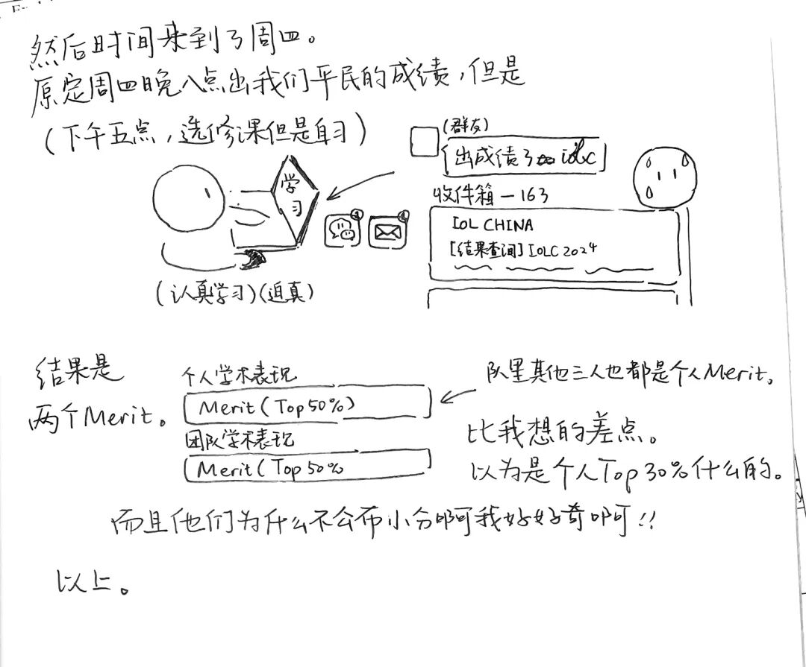
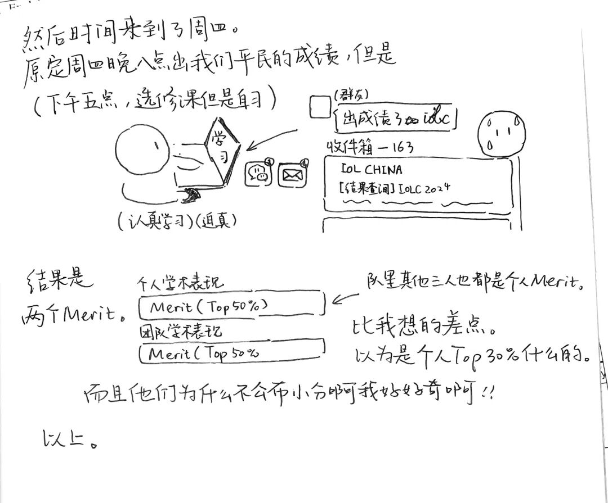

Comics
Short comics and visual storytelling exploring language, culture, and play.
About These Comics
Every Friday night, after a week of classes, I’d open my sketchbook and draw. This habit began in my fourth grade, in 2017, after I came across Have you seen my puppy? by my favorite Japanese artist Naoko Takagi. In her book, she writes about her childhood dog, Muku, and how her habit of keeping comic diaries eventually shaped her career. I remember thinking, that’s so amazing — one day, I want to be someone’s Naoko Takagi, inspiring others like she inspires me. Since then, drawing has become a quiet ritual and a way of pausing the world for a moment.
Some weeks, I sketch daily conversations with friends; some other times, I record my teacher Alan’s farewell in English Literature class or a silly mistake that still makes me smile. Each page distills my past week of life into a single moment I can hold onto.
Later, when I scroll through my WeChat blog where I post all my comic diary, I often find myself wondering what I was doing exactly a year ago. A casual remark from a friend months ago that I barely noticed and jotted down on the paper might suddenly make a new layer of meaning. Those rediscoveries brings me a rare kind of joy: the sense that time doesn’t just pass, but accumulates meanings as it went.
Sometimes, my comics and posts branch beyond my daily life. Once, after spending all day fighting with a Python library called KenLM, I wrote a complete guide explaining why it failed on newer Python versions. About a month later, a stranger emailed me saying that my post “saved” them hours of frustration, and even reprinted on their blog. I still remember grinning at the screen and amazed that something written in my room could ripple outward and truly help someone I’d never met.
Through these drawings and words, I find three quiet joys: in creating, in rediscovering, and in connecting. Each one of them reminds me that even the smallest story could reach beyond its frames.
Gallery
 
